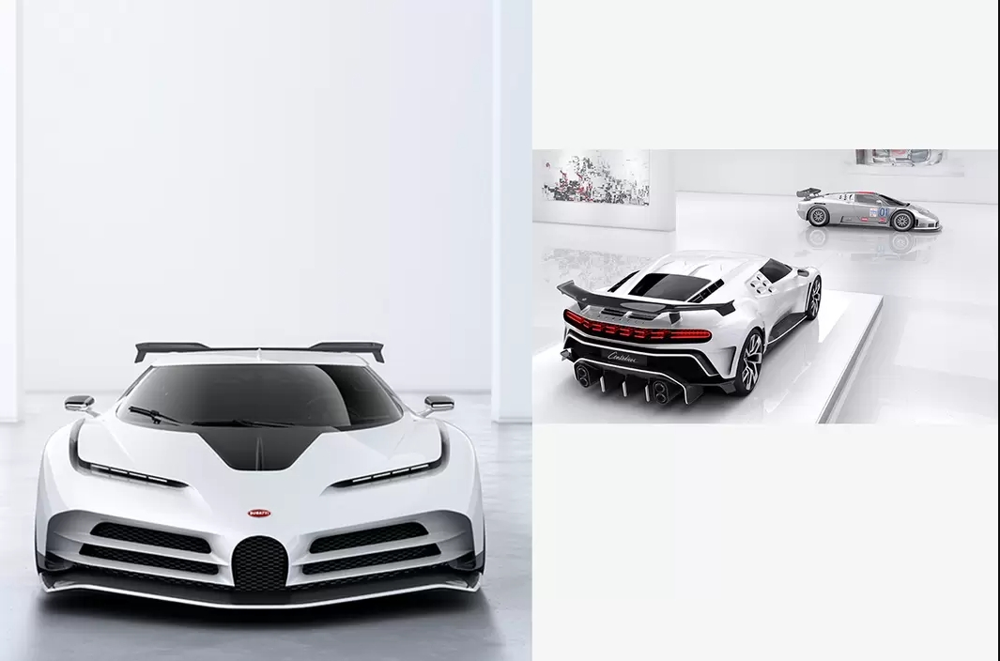

CELEBRATING AN ICON
With the Centodieci, Bugatti pays tribute to an extraordinary part of its long and rich history: the EB110. Inspired by the legendary supercar of the 1990s, Bugatti once again pushes the boundaries of design, technology and performance with this exclusive and magnificent small series. Limited to ten units, the Centodieci is not only a homage to and modern reinterpretation of the EB110, but it’s also a fascinating manifesto connected with the brand values of excellence, courage and dedication.

SHOOTING STAR
Back in 1991 the EB110 catapulted Bugatti to the pinnacle of the automotive world once again after a hiatus of over three decades. During this lapse Bugatti lived on in the hearts and memories of many enthusiasts, collectors and connoisseurs. Romano Artioli was one of them. In 1987, this Italian entrepreneur and Bugatti collector bought the rights of the brand with one strong commitment: to build the best and fastest supercar in the world, and put Bugatti back where it belonged and where it still is today.